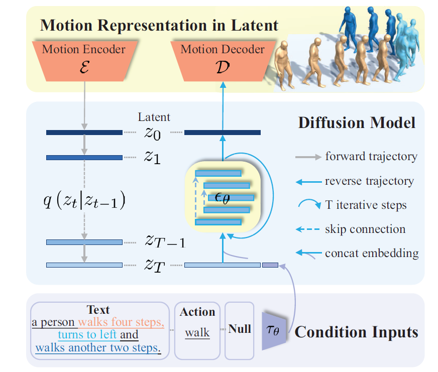
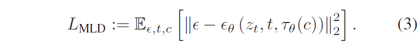
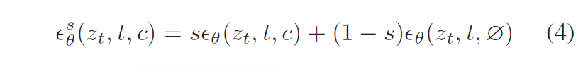

论文：Executing your Commands via Motion Diffusion in Latent Space
Overview
任务：根据动作类别/文本描述条件输入，生成人体运动的序列。
难点：
- 人体运动非常多样，而且人体运动的分布和作为条件的模态（比如文本）的分布非常不同，很难学习从条件的模态到人体运动序列的概率映射
- 动捕系统获得的原始运动数据是1)冗余的， 2)包含噪声的，直接在上面建模会导致较高的计算消耗和噪声引起的artifacts
Motion Latent-based Diffusion model (MLD): 用VAE来学习latent representation，在latent space上完成diffusion process。
结果：生动的运动生成，减小训练和推理阶段的计算消耗。
Intro
解决多模态的生成问题，大致有两种方法
- 用一个跨模态兼容的latent space，比如TEMOS，但是因为运动和文本的分布差异太大，导致misalignments，所以生成多样性低
- 条件扩散模型 √
有高质量标注的人体运动数据集很有限，但无标注/弱标注的大型数据集有开源的，比如AMASS。MLD可以训练一个autoencoder，得到latent space
相关工作
人体运动生成
- 无条件的运动生成
- text-to-motion
- action-to-motion: 动作识别任务的逆问题
大多数工作只能完成上述的某一项任务，不能改变条件输入的类型。本文把动作生成模型和LDM分开，从而解决该问题。
运动表示
关节位置，Master Motor Map (MMM) format
本文使用的：
- SMPL-based 运动参数，广泛用于动捕，本文中action-based任务要用到SMPL参数，以便和其他方法比较
- 冗余的手工标注的运动特征结合关节特征，常用于动画，在本文中主要用这种方法，避免foot-sliding问题
还介绍了一些数据集，生成模型和扩散生成模型。
Methods

两阶段训练
VAE Encoder & Decoder: Transformer-based
扩散模型的目标函数和LDM那篇文章中是一样的

同时学习有条件和无条件的分布，取决于系数s
